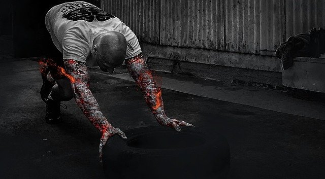

QUANTAS VEZES DEVO TREINAR UM GRUPO MUSCULAR?

( Schoenfeld et al. 2016 ), numa meta análise em 2016, chegou à conclusão que treinar 2x um grupo muscular era mais hipertrófico que treinar apenas 1x na semana. Essa meta-análise continha algumas limitações que deixavam dúvidas nos leitores.
A partir dessa data, vários artigos foram feitos na tentativa de perceber o papel que a frequência de treino tinha na hipertrofia. Não apenas se avaliou 1 vs 2, mas sim diversas frequências ( 1 vs 2 vs 3 vs 4-6 ).
Schoenfeld, Grgic e krieger numa revisão sistemática com meta
análise, em 2018, foram à procura de respostas. O que eles
perceberam foi que, com o volume de séries equalizado ( todos os
grupos faziam o mesmo número de séries numa semana ), não havia
diferenças significativas entre grupos. Isto é, treinar peito à
segunda e só treinar na próxima segunda era igual a treinar
peito na segunda, quarta e sexta e domingo, desde que o número
de séries fosse o mesmo.
Embora os resultados estatísticos, não fossem significativos,
quando o volume era dividido em 3x e 4-6x na semana, a média foi
maior. O que nos pode levar a pensar algumas coisas.
Porém os 25 estudos incluídos nesta meta-análise, a maioria
analisou a “ hipertrofia “ dos braços e das coxa, ou seja, não
se pode dizer que funciona assim para dorsal, ou para peito!
Outra limitação desta meta-análise foi que não havia a certeza
que todas as séries tinham a mesma cadência, o mesmo tempo de
descanso, se tinham sido levadas todas até à falha ou não, se a
quantidade de proteína ingerida pelas amostras era a mesma,
etc...
O que pode acabar por influenciar os resultados!
Também não houve distinção entre exercícios isolados vs compostos e isso pode influenciar, visto que a sobrecarga neuromuscular de um agachamento pesado não é a mesma que uma extensora.
Será que podemos agachar pesado 6x na semana e não comprometer a
hipertrofia?
São algumas das limitações desta revisão.
Os autores concluem dizendo que para um dado volume de treino, o melhor é deixar à preferência do atleta ou treinador, tendo em conta que treinos mais divididos podem acumular maiores volume de treino.
O QUE DIFERE NO TREINO DA MULHER!

Há coisas que na minha opinião são gerais. Sejas tu homem ou mulher, estes princípios eu não abro mão.
Tu vais treinar em
mente na sobrecarga progressiva. Tu vais treinar pesado. Tu vais
utilizar reps altas em certas alturas. Tu vais treinar com
compostos. Tu vais utilizar acessórios. Tu vais treinar com
técnica perfeita. Tu vais fazer descansos curtos e descansos
longos, tu vais treinar mais aquilo que queres melhorar
mais, etc...
Mas certamente deve haver algo que muda. Obviamente,
um dos parâmetros que muda em muitas meninas, é as preferências
musculares. Uma menina não quer tanto superior como um homem e
um homem não quer tanto glúteo como uma menina. Então isso muda
tudo! A frequência, o volume, os exercícios, etc...
Então numa
menina faz sentido treinar glúteo 3x na semana, enquanto que dar
um cheirinho nele ou nem fazer algo isolado para ele, é
perfeitamente normal num homem. Pegando nos superiores, por
exemplo uma cliente minha no outro dia disse-me: “ não quero
mais superior, assim está bom! “.
Então ela dá só um cheirinho
nele, porque também é importante treinar, mas com um volume
muito reduzido só para manter o que já tem e não deixar o ombro,
a dorsal, os braços flácidos e molengões.
Outra situação que eu
reparo, que difere dos homens, é que as meninas, tu dás-lhe
sobrecarga e nunca está bom !
A @beatrizxxrocha, treinava perna
3x na semana e tava tudo tranquilo. 1 dia de descanso entre
sessões de inferiores, era completamente suficiente para ela
recuperar e estar a esmagar o glúteo dois dias depois.
Até há
algumas teorias e evidências nesse favor, a responsabilizar os
estrógenos. Inclusive uma revisão sistemática com meta-análise,
em 2018, mostrou haver diferenças significativas na DOMS entre
homem e mulher. ( Dupuy et al., 2018 ).
Já um homem, eu dou um
treininho de perna mais puxadinho, e ele fica-me a ganir durante
dias! Eu já tenho que ter o dobro do cuidado no volume de
inferiores que dou para ele, por exemplo. Algo que as mulheres
também pecam é na escolha da carga. Muitas vezes elas
subestimam-se e acabam por pegar em menos peso do que aquele que
realmente conseguem.
E quando lhes é perguntado : “ Quanto
custou esta série? “, elas atribuem um valor mais alto do que
realmente custou. ( Cotter et al., 2017 ).
Eu aconselho
fortemente a utilização de feeders set para ajudar na escolha da
carga.
Sinto também um ligeiro medo das meninas em treinar com
cargas altas. Penso que ainda haja na cabeça, muito o mito de
que treinar com cargas altas vai deixar as meninas masculinas.
Mito que não tem base nenhuma de evidência.
Treinar com cargas altas é seguro, e só vai ajudar as meninas a atingirem o corpo que sempre quiseram. Aqui a utilização de um diário de treino é fundamental para elas verem realmente o poço de força que são.
POSSO TREINAR COM DORES MUSCULARES?
Para esta semana estava programado treinar perna ontem só que ontem, ainda estava dorido dos meus posteriores de coxa. Então acabei por adiar o treino. Mas porquê?
Ora, sabemos que quando nós temos um treino que gera dor muscular, das duas uma, ou tivemos uma grande componente excêntrica ou tivemos uma “ agressão muscular “ excessiva. Ou então as duas !
E o que é que
acontece dentro do nosso músculo, após isso ?
1- Nós sabemos que
houve uma rutura da membrana muscular ( sarcolema ) e também da
membrana do retículo sarcoplasmático.
2- Essa rutura do
retículo, faz com que haja um extravasamento de cálcio que faz
com que haja uma inibição de produzir ATP e assim haja uma perda
de força.
3- Este extravasamento estimula também enzimas
(proteases) que degradam mais proteínas. Dificultando ainda mais
a recuperação.
4 - Toda esta degradação, vai gerar uma
inflamação.
5 - Essa inflamação vai originar que mais células do
nosso sistema imune ( macrófagos e neutrófilos ) limpem o local,
a ponto de regenerar o tecido.
6 - Com esta inflamação, há
presença de prostaglandinas e histaminas, daí existir aquela
sensibilidade/dor ao toque.
7 - Dependendo do dano muscular,
esta inflamação ainda vai durar algum tempo a ser “curada“ (
24-72h ).
Por isso é que é normal, 2 dias após terem treinado
aquele grupo muscular sentirem-se inchados/com pump no mesmo
sítio.
Porquê?
Porque são essas as razões da inflamação ( dor /
turgor / rubor / calor / inchaço ou edema- devido a todo o
sangue presente no local para que haja reparação tecidual e
perda de função).
Posto isto, já dá para ver que o vosso
músculo, se tiver ainda inflamado não vai estar nas melhores
circunstâncias pra ser treinado. Ele provavelmente não vai ser
capaz de produzir tanta força, ele não estará com os depósitos
de glicogenio cheios ainda, a biomecanica do movimento não
será a mesma, etc...
Então para além de vocês estarem a ter um
treino não tão eficaz, ainda vão estragar toda a cicatrização
que estava a ser feita, acumular inflamação em cima de
inflamação e a longo prazo, poderá não ser bom ao ponto de
aumentar o risco de lesão.
Portanto, faz como eu e espera mais
um dia ou outro, treina outro grupo muscular e depois voltas a
treinar esse músculo!
8 DICAS PARA MELHORARES O TEU PONTO FRACO!
É perfeitamente normal gostarmos de treinar mais uns grupos musculares que outros. É também perfeitamente normal conseguirmos ter uma consciência corporal melhor a treinar certos grupos musculares. Por consequência , o nosso físico carrega grupos musculares mais desenvolvidos que outros.
Para quem deseja um corpo mais “ simétrico “ e bonito, existem
algumas coisas que vocês podem fazer pra combater esses PONTOS
FRACOS :
1 - Reajusta a tua técnica.
Por vezes basta diminuir o peso que
se levanta, voltar a dominar a técnica, melhorar a consciência
corporal , melhorar a coordenação, a ativação de mais unidades
motoras e voltar lentamente ao ponto onde se estava
anteriormente.
2- Aumenta o volume de séries semanal.
Se a literatura já nos
mostrou que há uma dose resposta entre a hipertrofia e o volume
de séries semanal, aumentar o volume de séries cerca de 20%
seria uma boa hipótese.
3 - Não treines fofo.
Deixa essas metodologias todas “xpto” de
lado. Eu sei, tu gostas de sentir o músculo a queimar , gostas
de ter pump, gostas de suar muito ... bla bla bla. O teu músculo
não quer saber do que tu gostas. O teu músculo quer tensão
mecânica para crescer. Então tira rendimento do teu treino e não
fadiga. Não tenhas medo de treinar na casa das 3-5-8 reps ...
Estas intensidades são ótimas para aumentos de força ( NÃO SÃO
AS ÚNICAS ) e fazem com que tires o medo de cargas altas e
comeces a treinar de verdade.
4- Faz uma pre-exaustão.
Isto não é geral a todos... Isto pode
ser uma boa opção para quem vai para os compostos e só sente a
utilização da musculatura acessória. Para quem têm dificuldades
em estimular o músculo alvo em exercícios compostos
5- Diminui o volume de treino.
Provavelmente estás a treinar com
um volume de séries tão alto que nem consegues recuperar do
mesmo. Embora haja uma dose resposta de hipertrofia e volume de
séries, também temos literatura que nos mostra que a partir de
um certo número de séries ( 45+/- ) , os resultados são opostos.
Avalia este parâmetro fundamental.
6- Não tenhas músculos tensionados.
Alguns músculos acabam por
ficar tensionados, e sabendo que para que haja hipertrofia o
sarcómero tem que estar num comprimento ideal, para além de que
quanto mais amplitude de movimento tiveres mais UMs vais
recrutar...faz alongamentos e mobilidade articular para não
comprometeres a hipertrofia.
7- Estratégias nutricionais.
Podes optar por reforçar o dia
anterior e o mesmo dia de que treinas o teu grupo muscular mais
fraco.
8- Otimiza o teu descanso.
Tira um dia de descanso antes do
treino do teu ponto fraco, para saberes que vais treinar
renovado e pronto para dar o máximo de ti.
PASSO A PASSO PARA SABER SE ESTOU EM DÉFICE CALÓRICO?

Queres perder gordura e ouviste dizer que para isso tens de estar em défice calórico. Ouviste também que isso significa estares a comer menos do que gastas diariamente. Porém, não sabes efetivamente se estás ou não em défice calórico. Então, como fazer isso na prática sem utilizar aquelas apps pouco fiáveis?
Faz o seguinte:
1 - Delineia as quantidades que vais comer ao longo do teu dia e faz essas quantidades durante duas semanas.
Por exemplo : Hoje comi 200g de arroz ao almoço… Okay , vou comer 200g de arroz ao almoço durante duras semanas. Claro está que vais fazer isto com todas as refeições.
2 - Durante essas duas semanas vais-te pesar todos os dias ou então dia sim dia não ( para não ser tão stressante).
3 - Vais apontar o peso todos os dias nas notas do teu telemóvel.
4 - Ao fim das duas semanas faz a média dessas pesagens (peso de cada dia somado / número de pesagens).
5 - Ao teu peso inicial, vais subtrair o resultado da média.
6- Compara os resultados.
O resultado é positivo ?
Pois bem, tu perdes-te peso e estás em défice calórico!
O resultado é negativo ou é o mesmo?
Então não perdeste peso e não estás em défice calórico.
Solução?
Ou começas a gastar mais no teu dia-a-dia, através do treino ou do cardio ou do NEAT, ou diminuis na quantidade de comida e voltas a fazer tudo de novo.
Só assim , tu tens a certeza se estás no caminho para o teu objetivo ou não.
SUPLEMENTAÇÃO - O QUE SIGNIFICA SUPLEMENTAR?
Também confundes suplementar com complementar?
Nos suplementamos quando trazemos para a nossa dieta algum produto que contém certo nutriente, ( por exemplo uma proteína), que se tornaria inviável/insustentável adquiri-la na nossa alimentação devido à sua sua pequena quantidade presente nos alimentos. Por exemplo ... A creatina, a beta-alanina, substâncias que se encontram em pequena quantidade nos alimentos e que pra servirem de recursos ergogénicos, elas têm que ser consumidas em doses que só 2kgs de carne vermelha por dia iriam permitir (nada viável).
Isto é suplementação.
Complementação é quando nós tomamos algum produto que contém certo nutriente que, por algum motivo não conseguimos ingerir a nossa dieta, e que sem o mesmo a nossa dieta não é tão saudável quanto poderia ser. Por exemplo , eu tomo Ómega 3 porque sei que não como peixe todos os dias. Sabendo das falhas nutricionais que me proporciona, complemento a minha dieta com ómega 3.
Outro exemplo seria tomar vitamina D para quem ter trabalhos noturnos e que na presença de luz solar, encontra-se a dormir.
Sendo assim eu aconselho apenas suplementos que possam ter um efeito positivo na performance ( creatina , beta alanina , cafeína, bicarbonato de sódio, etc. ) , quando percebo que a pessoa já se sabe alimentar e treinar bem. Caso contrário não vai potenciar nada.
Quanto aos complementos, vejo uma opção de comprar omega 3, vitamina D e pouco mais que isso porque as DDR (doses diárias recomendadas) de outras vitaminas e minerais conseguem-se atingir facilmente com uma nutrição variada e equilibrada. Quando tens a necessidade de complementar com muito suplemento, algo na tua alimentação não está certo.